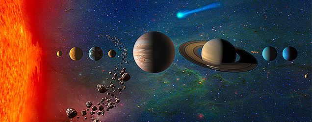
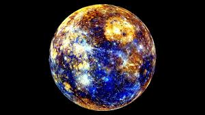
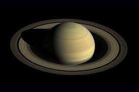
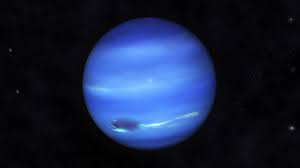

Het zonnestelsel





Het zonnestelsel bestaat uit de zon en hemellichamen die door zwaartekracht verbonden zijn met de zon. Het bestaat uit acht planeten en vijf dwergplaneten, planetoïden, manen en kometen. De planeten in dit zonnestelsel zijn Mercurius, Venus, Aarde, Mars, Jupiter, Saturnus, Uranus en Neptunes.
Het zonnestelsel beweegt zich voort met een snelheid van ongeveer 220 m/s. Dit gebeurt in een vaste baan om het centrum van de melkweg. Er is een theorie dat er een vaste tijd is wanneer er een periodieke massale uitsterving van het leven op aarde.
Het zonnestesel is ongeveer 4,5 miljard jaar geleden ontstaan. Een interstellaire gaswolk werd toen actief en niemand weet waarom. In het midden van deze gaswolk ontstond toen de zon. Na ongeveer een miljoen jaar na het bestaan begon de zon een sterke straling en die blies erg veel dingen weg behalve de gasreuzen. Toen begon er een stabiele baan te ontstaan rond de zon. De planeten en manen werden gemaakt door de botsing van protoplaneten.